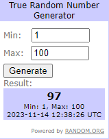
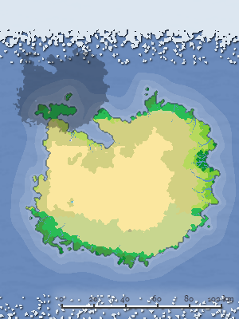
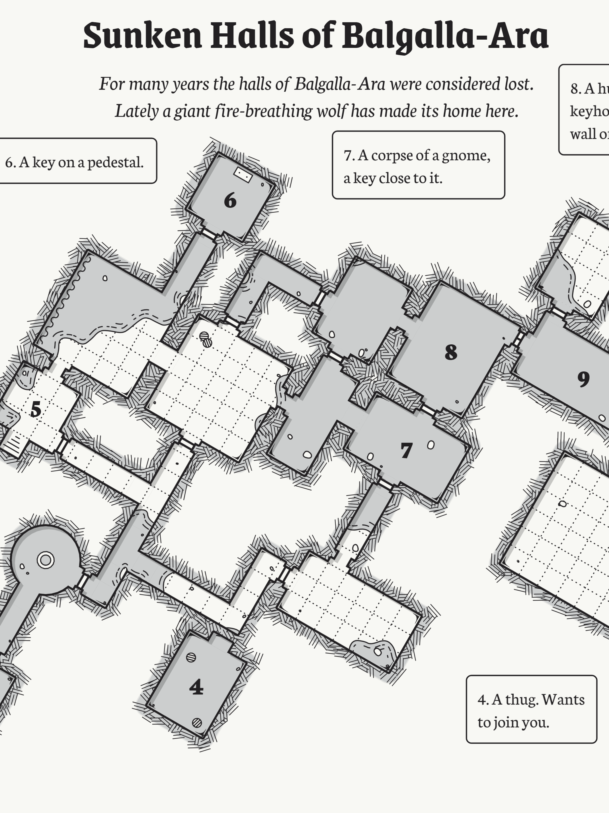

本子网页包含背景相关的内容
进入本网站的人有些可能不知道安科是什么，有些可能不知道群星是什么，还有一些可能两者都不知道，为此，前几个栏目中的内容可能比较适合你
如果对我本人比较感兴趣的，可以看我写的小小的个人简介
最后两个则分别是群星这款游戏中相关剧情内容的展示，另一个则是在宏观下展现我写的安科内容大背景
-

安科是什么？
安科，是网络流行词，衍生自日本的一种游戏安价。指作者在文学创作中，把后续的故事走向列出好几种可能，通过掷骰子随机选出一个，按照选出的那个故事走向把故事写下去 ……点击查看详情
-

群星是什么？
《群星》是由Paradox Interactive研发的一款太空策略类游戏，在游戏中，我们可以操纵自带的或者自建的一个独特的太空文明进入太空，对太空展开探索，遇见多样化的外星种族，遭遇各种随机事件与敌人。 在玩家的操控下，这个文明或许可以称霸宇宙，成为宇宙帝国，亦或被强敌摧毁，终成昙花一现 ……点击查看详情
-

为什么创作群星内容的安科?
安科这种形式相当适合于创造故事，故事走向可能难以预计，也会相当的欢乐，可以简单的看成是更为戏剧化的人生， 而群星则展现了不同社会的可能性以及多彩的太空故事，这些可能性和丰富多彩的故事与安科相当契合 ……点击查看详情
-
关于我和我的自设规则
124680hp，是一个一个大学生，爱好游戏，安科，跑团等。我作为一个安科新人，有着许多感想，也有许多想要实现的东西 ……点击查看详情
-
群星中相关剧情介绍
你听说过这样一个故事吗？不止多少年之前，一个星系中有着两个宜居星球，上面居住着两个本属同源的物种，但是……
群星之中，不乏愚者，两体社会，起源同根。分居两星，却生二心，纷争不断，战乱遂起。核子烈焰，燃尽一切，喧嚣闹世，归于死寂。
然，余烬复燃，废土复生，死寂之中，生命复归。社会再起，文明重生，废土生存，绝非易事。沉痛往事，深埋于地，命运所向，归于何方？
……点击查看详情 -
安科背景介绍
死寂星球双子星的故事让我产生了许多遐想，他们究竟是因为什么原因才决裂，最终爆发核战争，毁灭了双方呢？他们各种从灰烬中又产生了各种的原始社会，他们的社会形态会是如何呢？ 他们从灰烬中重生，最终成为了两个不一样的物种，他们又会有什么特性？ ……点击查看详情